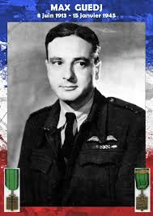
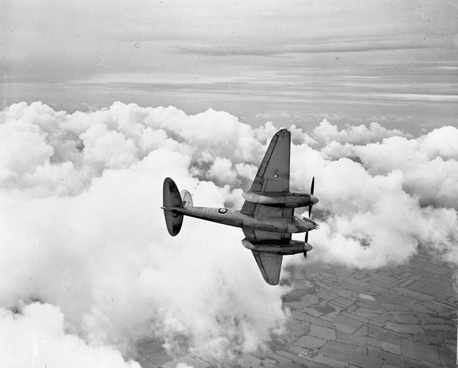
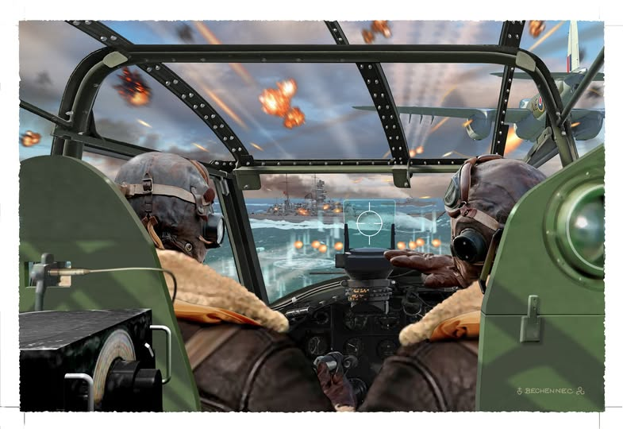
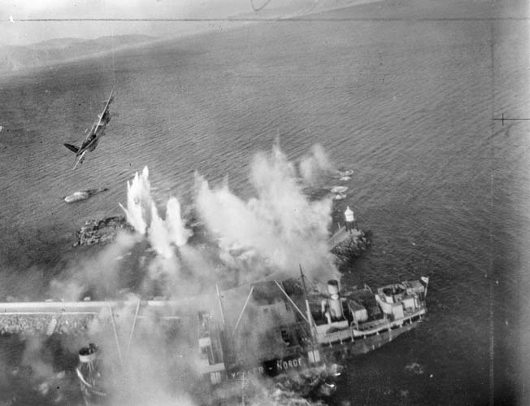

Max Guedj
Martírio e Glória na Defesa do Mundo Livre
(Do Livro Fogo no Céu de Pierre Clostermann)
(Mantém grafia original da obra)
South-Kensigton. - Mess do QG faz Forças Aéreas Francesas na Grã-Bretanha (Londres) – 25 de agôsto de 1944
Ele está num canto do bar, calado e só, pois faz muito frio e ele está muito triste
E, naturalmente, na outra extremidade da sala, é dele de quem falamos, em voz baixa.
Através das considerações profissionais – no entanto, nosso pequeno grupo é composto de caças cobertos de palmas – ressalta toda a consideração que temos por Max, o famoso wing-commander “Maurice”, do Coastal Command.
Sobre o uniforme de comandante , a Cruz da Libertação, a Distinguished Service Order, e duas Distinguished Flying Cross
Atualmente, Max Guedj conta com mais de cem missões de Shipping-strike, voando em Beaufighter e em Mosquito. Comanda uma wing do Coastal Command. Em torno dele há uma aureóla de respeito e de lenda com que os jovens pilotos sempre envolveram os grandes ases: - o caso do Prinz Eugen, em 12 de maio de 1942, os dois Junker 88 abatidos ao largo de Royan, depois de um combate que durou 40 mortais minutos, o golpe de Brest…

Tudo isso contribui para isolá-lo ainda mais.
Sabemos pela B.B.C. que, ainda anteontem conduzia quinze mosquitos ao ataque, perto de Verdon, contra dois draga-minas e um torpedeiro da classe do Narvik: dragas afundadas a foguetes e torpedeiro seriamente danificado...
Sabemos também que tem boas razões para estar triste e distante.
Considerados seu caráter e sua idade (tem trinta e dois anos), sua formação (é doutor em Direito), sua personalidade calma, fria e científica, sua escolha do strike é, para nós, fonte de permanente espanto.
Ele está a frente de uma unidade onde se reúnem todos os “duros” da R.A.F. e onde é bem dificil sobreviver às trintas missões requeridas do turno de operações. Já há três anos e meio se mantém numa especialidade em que as unidades perdem, em média, num mês, 75% de seus efetivos.
A flak é terrível ...
Ontem, por exemplo, dia 24 de agosto, 12 Beaufighter do Esqudrão 236 e Beaufighter do 404, comandados por E. W. Tacon, o neozelandês, lançaram-se contra dois torpedeiros Narvik, da ponta de Graves. Os dois navios soçobraram em chams, mas somente três Beaufighter regressaram à base.
Os caças inimigos são ainda piores.
Em março último, seis Messerschimitt 109 de Mérignac pegaram seis Torbeau (Beaufighter Torpedeiro), dos quais apenas dois conseguiram escapar, para irem esmagar-se em sua base, na Inglaterra, matando uma das duas equipagens sobreviventes.
Meio-dia e trinta. O Coronel e os oficias do Estado-Maior se levantem. O almoço está servido.
Vemos Max levantar-se também e partir para o rancho...
Não mais voltaríamos a vê-lo. O ritomo da guerra se acelerava e ele só muito raramente gozava de suas licanças regulamentares.
E veio aquele triste dia de inverno de 1945. Eu e Jacques estávamos em visita ao G.Q.G do Fighter Command em Stamore, ao lado de Pete Wickheam, chefe do Gabinete Tático, quando o telegrama chegou.
Ele no-lo estendeu, sem dizer nada, e jacques o leu sobre meus ombros:
- Max está morto!
Era incrível! Max, o maior de todos os ases da aviação francesa de 1939-1945, deixar-se abater sobre a Noruega, depois de quatro anos de luta, com a Frana já libertada e a guerra prestes a terminar...
Admirável grande Max! Morrer assim, longe do sol, na sombra e no frio glacial do círculo polar, com suas cinzas dispersas sobre as águas glaciais de Otof Fjord!
O mais glorioso dos veteranos das Fôrças Aéreas Francesas Livres morrera! Mais um, depois de tantos outros.
R.A.F. Station Coastal Command
Surge subitamente a luz, depois do black-out e do silêncio do aeródromo deserto.
Os dois cobertores estendidos através do tambor caem atrás dele. Piscando os olhos, pega sua irving-jacket, cuja gola de pele, úmida de neblina, cheira a óleo de carneiro e couro mal curtido.
A barraca ressoa ao choque das caixas que caem e das poltronas empurradas. Corrida de grotos em recreio
Os pilotos comemoram o êxito daquela tasde: um cargueiro de 7.000 toneladas afundado a saída de Zuiderzee...
Max, para um momento à porta do salão, enfiando, num gesto familiar, seu quepe sob a dragona do battle -dress.
Sua entrada é saudada pelos habituais:
- Good evening, Sir. Have a drink, Sir?
- No, thank you.
Tem sempre consciência do tom seco de sua voz, como também de seu acento francês.
Recomeçam a brincadeira, entusiasmados. Acuaram o oficial de administração num canto do bar, e, enquanto quatro pilotos o seguram pelos braços e pelas pernas, um quinto, com isqueiro na mão, chamusca sua gravata, no meio de um círculo vociferante e interessado.
- Que cachorros loucos! - pensa Max.
Ali estão canadenses, australianos, uns trinta ingleses, neozelandeses, dois americanos, um belga – todos sob suas ordens. Rapazes de dezoito a vinte e cinco anos.
- Maurice, it will be a tough job! disse-lhe o Marechal do Ar Slessor, comandante-chefe do Coastal Command, ao lhe confiar a wing
Evidentemente ele é francês – e é também duro e difícil com ele, como o é para si mesmo.
No fundo, eles o respeitam: de certa maneira é seu modo de estimá-lo. Respeitam-no por sua D.S.O. e, sobretudo porque sabem que ele é o melhor: é o primeiro a mergulhar nas barragens de flak, é melhor atirador que eles, melhor piloto. Respeito profissional, que é, talvez, a mais bela forma de amizade entre os pilotos.
Max consulta o relógio: dez horas da noite. Acabou-se a brincadeira:
- All right, chaps, bed now…
Sua voz cobre o tumulto, que cessa aos poucos. Só os que beberam um pouco mais de cerveja, mantendo, instinitivamente o equílibrio, continuam a discussão em voz alta. São esses os momentos mais difíceis de um comandante, na intimidade, na grande frasternidade do mess
...strike laid down at dawn
Diz as últimas palavras no mesmo tom de voz, para que eles não a considerem uma explicação, o que seria uma desculpa.
Então, faz-se o silência; depois o ruído dos copos que se largam e dos móveis, colocados em seus lugares com um golpe de joelho...
Max já está em seu quarto lá no fundo do corredor, é privilégio dos comandantes alojarem-se no próprio mess, quando os pilotos e os observadores começam a sair
.Aos pares, por equipagem, falando em voz baixa, eles mergulham no tambor do hall...
Quinze minutos depois, as réstias de luz das barracas Nissen se extinguem, umas após a outras
Na noite, espasmódicamente rasgada pelo farol circular da torre de controle, que lança infatigávelmente seu facho luminoso, a base está adormecida.
5h30min
O flight-lieutenant Forbes, Oficial de Inteligência, de serviço da noite acorda em sobressalto. A campainha do teletipo retiniu, com o ruído característico do rolo de papel, já começa o claque-claque monótono do teclado
Num canto da sala de operações, sob os raios pálidos do néon, cujos tubos se acendem, o sargento de gurda salta dos cobertores de seu leito de campanha e se instala no centro telefônico
Um olhar sobre a folha que se desenrola...
... Operação numero zero, zero, cinco, sete, um oito. Prioridade e segrêdo absoluto. Stop. Bombardeio de navios por todos os aviões disponíveis em Ofot Fjord, à hora…
Agora, apar o oficial de serviço é a rotina, que já sabe de cor, sem precisar consultar a lista dependurada junto ao microfone dos alto-falantes:
Acordar o wing commander flying
Alertar o oficial mecânico e o oficial armeiro da base.
Alertar o oficial de navegação e o Senior Intelligence Officer.
Prevenir o mess dos oficiais, suboficiais e homens.
Alertar a segurança e as salas de guarda. Suspender as licenças de saída até a decolagem dos aviões.
Os duzentos homens da base despertam, sacudidos pelos alto-falantes, que gritam no ângulo de cada barraca. Toda a grande máquina, de engrenagens bem ajustadas, põe-se em movimento...
E no entanto, antes de chegar ao teletipo, a ordem de operação CC-I 005718 Form D já percorreu um longo caminho.
Na noite anterior o Spitfire XI do reconhecimento estratégico (Strat-R) pousara em Peterhead, depois de um circuito de 2.000 quilômetros sobre o mar do Norte, até Tromsö, na Noruega, além do círculo ártico. Fôra preciso retirar, de seu avião coberto de gelo, o píloto esgotado pelas quatro horas de vôo na tempestade, enquanto os mecânicos desbloqueavam com jato de vapor as caixas cobertas de geada dos aparelhos fotográficos.
As fotografias, reveladas, mostraram um comboio naval inimigo na zona de Ofot Fjord – um petroleiro de 6000 toneladas, coberto por um grande contratorpedeiro da classe Ebling, duas escoltas Sans-Souci e dois Sperrbrecher, um dos quais quebra-gelo.
Enquanto as equipagens de Max brincavam no mess a trezentos quilômetros dali se realizava uma conferência no Quartel-General da 19ª Divisão Aérea do Coastal Command.
Air Marshall Sir Brian Baker e Air MarsallFrank Linden Hopps, comandante do Strike Group (Divisão de Assalto), depois do relatório dos serviços de Inteligência e da Marinha Real sôbre a importância da missão, tinham resolvido confiar a tarefa aos Mosquitos dos esquadrões 235 e 248, comandados pelo wing commander Maurice D.S.O., D,F.C.
O oficial de ligação americano tinha-se comunicado imediatamente com o Q.G. da 66ª Fighter Wing, 8 th. U.S.A Air Forces, em Swaton, para solicitar a disponibilidade de caças de ewscolta, enquanto um telefonema ao Q.G. de Uxbridge, da A.D.G.B (Air Defense of Great Britain), punha em alerta o esquadrão polonês 315, de caças P51 Mustang. Esta última unidade, aliás, já tinha experiência em escoltas sobre a Noruega.
As ligações D.C.A. e Royal Navy preveniam as baterias e os navios sobre o itinerário e horário provável da missão, para evitar algum desastrado engano
.Tudo fora projetado, previsto, discutido calmamente, sem paixão, como se se tratasse de um lançamento comercial. E tudo se concretizara na ordem de operação 005718, cuja Form D ia correr pelos fios do teletipo.
Enquanto Max se veste cuidadosamente - roupa de baixo da R.A.F., em lã de sêda, pulôver, côlete de pele de camurça debaixo do battle-dress, meias de lã enfiadas em botas forradas – tôda a base se anima febrilmente.
Várias carretas puxadas por um trator trazem aos armeiros os compridos e pesados rockets semiperfurantes explosivos de sessenta libras. Introduzem nas hastes, com cuidado, as cargas de cordite cruciforme que os impelirão a 300 metros prosseguindo. Sobre a placa de platina do detonador elétrico e os contatos de detonação, aparafusam, depois, com o mesmo cuidado, as aletas que estabilizarão sua trajetória.
Os motores Rolls Royce 25 dos Mosquitos VI são ligados, aquecidos e revistos pleos mecânicos. O enorme reboque-cisterna passa depois, de um avião a outro para abastecer ao máximo os dez tanques separados de cada avião, que contém, no total, 2520 litros.

Por rotina – pois, como de hábito, a missão será em vôo rasante, os encarregados da verificação da aparelhagem verificam as garrafas de oxigênio...
Nas cozinhas, as W.A.A.F. (Corpo Feminino Auxiliar da R.A.F.) preparam ovos com presunto e sopa para os quarenta navegadores e pilotos da missão.
Na calma da sala de operações, flight_LieutenantForbes, juntamente com o Senior Intelligense Officer, classifica as informações sobre o objetivo e as fotografias de Otof Fjord, na pequena bolsa destinada a cada uma das equipagens.
Trepado numa escada, o sargento estende, no mapa central as fitas azuis e brancas que marcam o itinerário da missão – de Sumburg a Narkik – azuis para os Mosquitos e brancas para os caças de escolta.
Debruçado sobre uma mesa, coberta de relatórios e de réguas graduadas, o flight_Lieutenant Sevens D.F.C., navegador-chefe da missão da wing, prepara as rotas e os horários, que anota no quadro-negro ao lado da telaonde serão projetadas as vistas de Ofot Fjord e as fotografias do comboio, trazidas naquele momento por um motociclista do Q.G., transido e coberto de lã.

08h 30min
As equipagens estão reunidas na sala de briefing.
Não são mais os “cachorros loucos” de ontem a noite, colegiais de absurda juventude. Seus rostos tenso não tem mais idade, como os rostos dos homens que vão enfrentar a morte. Em poucos meses, a máscara de dez anos suplementares fixou-se em suas fisionomias de crianças – máscaras que, muitas vezes, serão por demais pesadas de carregar, para os que sobreviverão, pois suas próprias mães não os reconhecerão.
Todos os olhares estão fixos no mapa, ali onde chega a fita azul, em Narvik, no meio da grande mancha vermelha – zona super saturada de flak
No escritório do Senior I. O., Max conversa ao telefone com o Air Marshall Hopps – “Hoppy” para seus pilotos – que quis transmitir-lhe pessoalmente as instruções finais.
Os pilotos apuram os ouvidos, mas só ouvem:
- Yes Sir, Yes Sir... Yes Sir.
E agora, em meio ao silêncio, Max sobe ao estrado.
Já está habituado a essa cerimônia, mas ainda tem a impressão de estar saltando o muro de outro mundo, cada vez que, lentamente, sobe os degraus.
Mais três missões, e sairá em licença de repouso, como querem seus chefes e o General De Gaulle.
- Attention, please! Dez Mosquitos, mais um avião do 235º esquadrão e dez Mosquitos mais um avião de reserva do 248º esquadrão devem atacar e destruir um petroleiro de 6000 toneladas, ancorado no fundo de Rombach Fjord.
Rombach Fjord é um prolongamento de Ofot Fjord, ou Fjord de Narvik, que alguns de vocês conhecem bem.
Como a distância a percorrer vai além de nosso raio de ação normal, e ainda porque vamos com carga completa de foguetes, faremos escala em Sumburgh, nas ilhas Shetland, para reabastecer.
O A.O.C. acaba de acentuar-me ao telefone a grande importância que o Quartel-General interaliado confere à destruição desse navio que transporta gasolina de aviação, com alto teor de octanagem, para os aeródromos do mar da Noruega. Como vocês sabem, a Luftwaffe dispõe de doze aeródromos importantes entre Bodø e Tromsø. O plano de evacuação alemão prevê a transferência imediata de grande parte das forças aéreas, ainda bastante poderosas, concentradas na Dinamarca. Se o inimigo obtiver bom êxito, isso significará, talvez, mais dois meses na duração da guerra, bem como a necessidade de uma operação anfíbia em grande escala para libertar a Noruega – e, portanto, novos mortos, muitos mortos...
É uma missão difícil para nós. Os Beaufighter não quiseram operar em Rombach Fjord, que é muito estreito para eles. E com razão, pois não confiam, agora, na trajetória dos torpedos em águas cobertas por blocos de gelo. Aqueles que se recordam do caso Nürnberger em 1942 lhes darão razão. Bloqueados nas geleiras do Cabo Norte, o grande cruzador, imóvel, constituía um alvo ideal; mas todos os torpedos haviam explodido contra icebergs, e os alemães deviam rir à vontade, olhando os destroços de quatro Beaufighter fumegando na banquisa.
Só nós somos suficientemente rápidos para subir os setenta quilômetros do Fjord de Narvik, sem muitas perdas com a flak.
As indicações meteorológicas não são nada boas: haverá neve e formação de gelo nos aviões. Por outro lado, isso talvez esfrie os Focke-Wulf 190, de Bardufoss e Skaaland.
Nossa escolta de caças partirá diretamente de Peterhead para o encontro, em pleno mar. São os Mustangs do 135º esquadrão polonês; nossos amigos yankees possivelmente acharam o tempo muito mau...
Voaremos em formação de combate, seções de três e de quatro em line abreast. Não se atrasem, de forma nenhuma, pois certamente perderiam o contato com esse tempo horrível. Os dois aviões de reserva não deverão ter excesso de zelo, e só nos acompanharão até o ponto de encontro com os caças e, se tudo correr bem, tomarão o lugar do avião em dificuldades. Silêncio de rádio absoluto; só usem sinais visuais.
Alcançado o objetivo, Revólver atacará primeiro; depois, e somente no caso de o petroleiro não estar destruído, o Shark atacará. As seções Azul de Revólver e Shark comporão uma patrulha que se ocupará dos navios de defesa antiaérea.
Visem, sem picar muito, a trezentas jardas, a base das chaminés, e seus foguetes atingirão a linha de flutuação.
Em caso de ataque de caças inimigos, círculo defensivo, redução de velocidade com dez graus de flapes e cerrem a viragem. Se estiverem sozinhos, há uma tática satisfatória: toda a velocidade e nuvens, sem esquecer, porém, que possuem quatro canhões de 20 mm no nariz – sirvam-se deles.
Todos os observadores levarão, individualmente, sua navegação para que possam voltar sozinhos à base, se for o caso.
- Alguma pergunta?
- Bem, é tudo.
Para a perfeita execução de um shipping strike, é essencial conduzir os aviões em bloco. Isso representa um problema técnico delicado, pois os Mosquitos esquentam terrivelmente ao rolarem no solo. Qualquer engarrafamento na extremidade da pista é uma catástrofe e, no entanto, como a gasolina para missões desse gênero é estritamente medida, mal as rodas são recolhidas, os aviões tomam o rumo. Assim, todos devem arrancar os motores ao mesmo tempo e executar rapidamente a rolagem no solo.
Para complicar as coisas, a pista de Sumburgh é muito curta e termina ao pé de uma colina. É necessário, com 3.000 rotações e +16 na admissão, quinze graus de flapes, arrancar o avião e subir antes de atingir a velocidade de segurança de 180 milhas por hora...
Conforme o previsto, os três últimos Mosquitos, com os radiadores a 130° e com fumaça branca saindo dos tubos de escapamento, não conseguem alcançar os demais. Furiosos, os pilotos têm que cortar tudo para evitar as terríveis fugas de glicol.
Às 11h 25min GMT, dezenove Mosquitos com Max Guedj à frente sobrevoam o Mar do Norte, rumo 069°.
12h 30min
Chove a cântaros e, como um cardume de toninhas fantasmas, os aviões cerram a formação, voando rente às altas vagas.
A neve fundida se mistura às látegas da chuva sobre os para-brisas, e as equipagens tensas, inclinadas para a frente, já denotam cansaço.
Voo de cruzeiro econômico: 220 milhas por hora, 1800 rotações e zero na admissão. Os observadores manipulam as chaves dos tanques, olhando permanentemente para os controles.
Às vezes o mar se confunde com a bruma, num grande muro movediço e opaco, onde os aviões avançam com inquietação.

Então, Max acende sua luz inferior de reconhecimento, e o facho luminoso se reflete e salta de vaga em vaga, atravessando as camadas brancas e úmidas que se arrastam e que as asas vão cortando.
Os aviões cerram mais ainda a formação.
Os Mosquitos, literalmente, abrem um caminho através da cerração. Os gases abrasadores de escapamento deixam rastros nítidos que marcam, no ar saturado de água e muito tempo depois de já se ter abafado o ronco de seus motores, a passagem da formação.
12h 40min
Os Mustangs, com aquele tempo execrável, parecem ter faltado ao encontro.
Max faz com que os dois esquadrões descrevam um lento e perigoso 360°.
Os pilotos se crispam nos comandos: entrar no vento das hélices de um companheiro, três metros acima da água gelada, é morte certa...
A manobra de Max dará dois minutos suplementares ao líder dos Mustangs em seu jogo de cabra-cega… sem que, todavia, alimente muitas ilusões. Com a reduzida visibilidade horizontal, a poucas dezenas de metros apenas, duas formações podem cruzar-se sem se verem. Não se pode pedir o impossível ao pobre caça, sozinho a bordo, sem navegador. Como poderia ele chegar no segundo previsto à intersecção imaterial de duas coordenadas arbitrárias, sem qualquer outro vestígio no mar uniforme?...
Nem sequer há o recurso ao rádio, pois o silêncio é obrigatório: os goniômetros e as estações de escuta alemãs estão vigilantes.
Max desiste de esperar por mais tempo e retorna ao seu rumo.
Com os olhos colados à vidraça, o navegador procura penetrar a bruma, pois a costa da Noruega se aproxima, traiçoeira, com suas montanhas caindo a pique sobre o mar… Quantos aviões do Coastal Command não se esmagaram, assim, às cegas, contra os granitos de Skjaergaard!
É neles que pensam, em todos os aviões, e os pilotos, com as mãos contraídas sobre os manetes dos gases, estão prontos a guinar brutalmente à esquerda.
12h 47min
Max rompe subitamente o silêncio rádio. São as primeiras palavras que as W.A.A.F. dos serviços Y de Wick e Kirkwall registram na página virgem que leva o título Radio-telephone Communications. OPS 005718.
Ele grita ao telefone:
- Revólver líder chamando. Navio às 11 horas, em frente de Shark Azul: afundem-no antes que use o rádio.
É preciso afundar imediatamente esse navio que, com certeza, possui rádio a bordo e irá assinalar o rumo e a composição da formação ao inimigo.
É tratar de agir depressa. Agora é que funcionará a maravilhosa disciplina de voo que Max inculcou em seus homens.
Automaticamente, o Shark Blue, que ainda não viu seu objetivo, mas cuja posição conhece em relação ao seu chefe, reduz o combustível, hélice a pequeno passo, guina à direita e, entre duas faixas de chuva, distingue um grande barco pesqueiro. Suas antenas de rádio estão soltando chispas. Está na hora.
O observador, com um movimento do polegar, acende o colimador e seleciona, num movimento de mãos, um par de foguetes de cada asa...
Wooofffoufff… os quatro projéteis deslizam sobre os trilhos e voam para a silhueta incerta que oscila lá na frente.
À esquerda do passadiço, perto do mastro, há como que uma luz emitindo sinais Morse. O flight lieutenant MacGregor, Shark Blue 1, sente um leve choque em seus pés.
Formidável irrupção de chamas alaranjadas, refletidas pelas vagas, destroços, jatos de vapor...
Acabou-se. Cortado em dois, o navio desaparece nas águas.
O Shark Blue guina seco à esquerda, a todo vapor, para alcançar a formação, e seu segundo, ainda ofuscado pela explosão, o acompanha da melhor maneira que pode.
- Vamos!
MacGregor, sacudindo seu observador, que parece adormecido em suas correias de segurança, recebe em pleno rosto um esguicho de sangue!
A pequena luz que piscava era uma metralhadora, e o choque era devido a uma ridícula bala de 7,7 mm. Mas essa bala furou o tanque de fluido hidráulico e ricocheteou, atingindo o observador em pleno peito...
Espalha-se no avião o cheiro do fluido Girling, que se prende à garganta e dilacera as mucosas. O piloto protege imediatamente o rosto com sua máscara de oxigênio, abrindo a válvula ao máximo.
Meia-volta na direção da Escócia. Talvez se consiga salvar o observador...
E o Mosquito desaparece no rumo oeste (2).
12h 53min
Ali está a grande muralha rochosa, contra a qual o mar arrebenta em formidáveis explosões de espuma que saltam e desaparecem na cerração.
- Revólver regresse, direção zero, um cinco!
Trata-se de uma ilha ou de Mainland? Todos esses penhascos e essas ilhas norueguesas são tão parecidos, sem qualquer ponto de referência válido!
Stadlandet Cape! - declara Stephens, afirmativo e calmo. Há dois anos opera no setor e conseguiu memorizar os mínimos detalhes da costa.
Rumo 015°, na direção norte, com os perigos do círculo ártico.
As águas da chuva – vibrações batidas pelo vento à superfície do mar – enfeitam-se de finos rastros brancos.
É a neve que aplaca as vagas fosforescentes, como outrora o óleo de linhaça que os navios levavam no convés...
Vindos do dia indeciso de nosso inverno, os aviões entram insensivelmente na sombra incerta das noites polares.
Só haverá mais uma hora, apenas, dessa luz pálida, sem relevo. É preciso atacar depressa.
A bruma levantou-se para dar lugar à neve, que surge na horizontal, abundante, desenhando uma espiral turbilhonante ao redor das hélices.
Aquecimento do carburador – ON; eliminador de geada – ON; bomba de fluido para as hélices – ON; aquecimento de Pitot e venturis dos instrumentos giroscópicos – ON...
Ao lado do piloto, o observador se movimenta.
Pang. - Crac. - Crac. - os blocos de gelo destacados das hélices batem na fuselagem de madeira, que ressoa como a caixa de um violão.
- Tempo infame!
Max não responde; está preparando seu plano de ataque… Shark irá pelo flanco esquerdo do Ofot Fjord, Revólver pelo direito e as seções azuis dos dois esquadrões atacarão pelo centro… Depois, todos - pelo menos os que escaparem aos dez minutos de fogo antiaéreo concentrado – se reagruparão em formação em torno do farol da ilha de Barøy...
- Alvo a dez minutos, à frente!
- Obrigado!
Lá embaixo, no horizonte, uma linha rósea, uma única mancha de cor na paisagem desesperadamente branca e cinzenta: aviões cinzentos de ventres brancos sobre um mar cinza, onde tombam montanhas brancas que se perdem nas cinzentas nuvens...
É o sol que rola sobre a banquisa desolada do Cabo Norte.
Max rememora. Fora em julho de 1942. Pilotava, então, um Beaufighter. Durante muitas horas, ele e seus companheiros haviam sobrevoado os monótonos emaranhados de blocos de gelo à procura do comboio de Murmansk, disperso pelo Tirpitz e pelos Junkers 88.
Das 33 embarcações que compunham a expedição, 22 navios mercantes, na maior parte americanos, tinham sido afundados. Os destroços fumegantes estavam atirados sobre os gelos, onde erravam, como loucos, os últimos sobreviventes...
Revólver e Shark, comecem! Alvo a três minutos, na frente. Shark à esquerda, Revólver à direita. Voltem e se reúnam depois do ataque em Barøy Light! Boa sorte!
Ali está Vest Fjord. Atenção! - 3000 rotações e +16 na admissão; hélice a pequeno passo; canhões carregados; foguetes prontos...
A ilha de Barøy, com seu farol de linhas brancas e pretas, seus semáforos e estação de radar...
E também com sua bateria de 88 mm. Três bolas ocres surgem repentinamente bem debaixo das nuvens, a duzentos metros acima da formação, como manchas de um mata-borrão… tiros de alerta da D.C.A., com certeza.
Em Narvik e Elvegården as sirenes devem estar uivando.
Revólver e Shark – ataquem!
É o grande Fjord de Ofot, flanqueado de montanhas de quinhentos metros de altura, coroadas de geleiras, caindo a pique nas águas frias e claras, franjadas de pedaços de gelo.
E a flak, que ainda não surgiu? Que milagre!
A formação ataca a seiscentos quilômetros por hora, voando rente às montanhas p>Shark à esquerda, Revólver à direita; no meio do Fjord, como um ancinho que sobrevoasse o canal livre, os seis Mosquitos das seções azuais avançam em line abreast...
Ao pé da ciclópica formação rochosa fincada na neve, os Revólver roçam os destroços calcinados de um torpedeiro alemão destruído em 13 de abril de 1940...
Subitamente, o Fjord principal se alarga como a palma de uma mão, cujos dedos são os Fjords de Herjangs, de Narvik, de Rombach e de Elvegården.
Em frente fica Narvik, com seus tetos negros, a torre de madeira de sua igreja, os pilares de madeira sobre o cais da estacaria… alguns barcos de pesca… um velho barco de roda semi-encalhado.
Atualmente reina a calma.
Max se recorda das fotografias da Intelligence. O objetivo está em Rombach Fjord.
Rombach Fjord – sinuoso corredor, com mil e duzentos metros de largura, encaixado entre paredes de oitocentos metros de altura, onde está presa uma nuvem que o encima como a tampa de uma caixa… no fim, colado ao rochedo a pique, deve estar o petroleiro.
- Cuidado! Flak.
Os Shark se desviaram para a direita, na direção da embocadura do Fjord. Max passa feito um bólido, virando na vertical sobre a cidade… o céu fica cheio de explosões e traçadoras.
Os seis Mosquitos das seções azuis avançam sobre o grande contratorpedeiro, que dispara com todas as suas peças, e que desaparece logo em seguida, em meio à fumaça e às explosões dos quarenta e oito foguetes que rasgam seu casco como papel de seda!

Um clarão no céu… graciosa parábola de uma faixa de fumaça e um Mosquito se abate. Outro espalha chamas soltas sobre o flanco da montanha, ao longo de uma fileira de pinheiros. Desprende-se um para-quedas de um terceiro, cuja asa foi arrancada por um impacto de 88 mm.
Verdadeira rede de luz estende-se através do vale, pelos cerca de vinte postos de flak perdidos nos rochedos.
As explosões de 20 mm formam um tapete branco ao redor dos aviões que ziguezagueiam loucamente entre aquele rosário luminoso...
Os dois navios de defesa antiaérea e de escolta, ancorados, bloqueiam a entrada do Fjord. É preciso passar entre seus fogos cruzados.
Entre eles, a flak tem sessenta tubos de 20 mm e vinte e dois de 37 mm… muralha ofuscante, formada por quinhentos projéteis explosivos por segundo, contra a qual os aviões se chocam.
Um Mosquito, provavelmente atingido na rampa de foguetes, explode dez metros acima de uma escolta, cobrindo-o com uma camada de combustível inflamado. As munições sobre a ponte explodem, despedaçando os serventes das peças de D.C.A.
O avião seguinte, visando ao acaso no braseiro, lança sua salva de foguetes, que faz em pedaços o pequeno navio.
É um verdadeiro inferno, com os ecos que as paredes rochosas repercutem. A flak e o roncar dos motores provocam avalanches que despencam em cascatas através das encostas até o mar… rugido surdo da natureza, revoltada contra o tumulto dos homens.
Mas, de súbito, uma nota diferente intervém naquele fragor: o ronco metálico e irregular dos motores B.M.W...
Vinte Focke-Wulf 190 desembocam sobre Bjerkvik. Vindos do aeródromo de Bardufoss, esgueiram-se sob as nuvens do vale e, a setecentos quilômetros por hora, caem sobre os Mosquitos, apanhados na armadilha do Fjord...
Max vai à frente. Lado a lado com seu observador, jogando seu Mosquito de uma asa a outra, eles conseguiram cruzar indenes a barragem dos flak ships.
Bem no fundo do fjord, formando corpo com a montanha, está o grande petroleiro, camuflado com listras brancas e pretas: ventre alongado, baixo sobre a água, chaminé bem atrás, como que incrustado no gelo. Sua silhueta bem nítida está enquadrada no colimador.
Golpes secos dos quatro canhões, cujas culatras batem sob os pés como pistões de locomotivas… Max espera chegar à queima-roupa para lançar seus foguetes. Enquanto isso, para neutralizar o fogo antiaéreo, ele abre fogo, e seus obuses de 20 mm assobiam, ricocheteiam no gelo, formando um colar de explosões sobre o casco...
- Arme os foguetes! Todos ao mesmo tempo!
O observador Stevens, crispado em seu assento – testemunha passiva à mercê da habilidade de seu piloto – arma a salva completa de oito foguetes… o equivalente a uma salva de artilharia de um cruzador de 1000 toneladas.
Max se inclina ainda mais para a frente, para o colimador, e seus olhos semicerrados se tornam duros... seus dedos roçam o disparador.
No exato momento em que vai atirar, seu Mosquito é repentinamente lançado para o lado por uma formidável explosão. Por instinto, apesar da dor aguda que sente no estômago, Max puxa o manche com todas as suas forças… o casco… os mastros… os rochedos… os pinheiros – tudo lhe salta no rosto.
O avião se dirige brutalmente para as nuvens, onde se esconde.
Max domina a guinada do avião que derrapa; por sobre os ombros do observador aterrado, vê o motor direito vomitando chamas através de suas capotas arrancadas.
Max sofre, além da dor lancinante do ferimento, a agonia do mortal P.S.V. "Perte de Sang et de Vie" ("Perda de Sangue e de Vida") nas nuvens eriçadas de montanhas. Os giroscópios e o horizonte artificial, momentaneamente desregulados pelo impacto, voltam a funcionar… o avião vibra perigosamente… uma calma extraordinária! … hélice direita em bandeira… extintores… sempre aquela dor dilacerante, e o sangue quente que escorre ao longo de suas pernas, sob as calças.
De súbito surge o céu azul, por sobre a compacta camada de nuvens!
O observador está morto. A cabine, o painel de bordo, os manetes, os vidros, tudo está coberto de manchas de sangue.
- Não posso perder os sentidos… não posso!
Virada à esquerda... 180°...
O fogo foi extinto e o motor direito deixa escorrer como que uma baba através das chapas retorcidas de enorme rombo.
Que estará acontecendo debaixo das nuvens?
Por vezes, alguns obuses de D.C.A. atravessam a camada branca e semeiam estilhaços escuros, que parecem destituídos de sentido naquela absurda calma.
Mas os foguetes continuam ali em seus trilhos: - que tentação em toda aquela vertigem! … regressar por sobre aquelas nuvens… naquela calma… até a Escócia… esperar que o rádio-compasso indique a terra… e então saltar de para-quedas...
Ele já conseguiu levar, do Golfo de Gascogne até Predannack, um Beaufighter voando com um só motor… com maior razão o faria com um Mosquito.
Sim, mas daquela vez a missão já estava cumprida. Que terá acontecido com aqueles aviões?… E o petroleiro?
Não há mais recepção radiofônica; apenas a emissão está funcionando.
Max tomou sua decisão… como está longe da França!
- Aqui Revólver líder! Vou tentar novamente!
Rápida consulta ao cronômetro. Lá embaixo deve estar o mar… descida prudente… algumas franjas de vapor mais pesado, e é novamente o mar, cinzento e movediço.
Uma curva, e eis novamente a ilha de Barøy!
Superpotência - emergency - no motor esquerdo, indene… fletners regulados para descansar o pé esquerdo, pisando fundo no pedal.
Narvik. Ah. Não posso perder os sentidos!
A lucidez da dor dá a tudo um relevo terrível… Os Focke-Wulf zumbem e saltam no fjord como vespas numa horta… Mosquitos em fogo, que debulham fragmentos de asas e fuselagens sobre a neve… colunas de fumaça negra derivando sobre a água…
Então, é isso tudo que resta de seus aviões?
Naquela baía, há uma extensa camada de mazute iridescente, semeada de destroços de navio… alguns homens que nadam com coletes salva-vidas amarelos… enormes bolhas de ar que rebentam à superfície… Mais além, um torpedeiro com enormes rombos está jogado contra os rochedos...
Mas, ainda resta a flak. Ela ressurge furiosa como borrasca, intransponível.
O Mosquito voa rente ao mar, perseguido por quatro Focke-Wulf com seus canhões espirrando clarões secos. Está tão baixo que o vento de sua hélice forma uma esteira sobre a água negra que se agita com pequenas erupções de espuma dos impactos de obuses.
Não perder os sentidos.
Um Focke-Wulf dança atrás do Mosquito, a vinte metros, para dar o tiro de misericórdia à queima-bucha. Os obuses rasgam a fuselagem e batem como marteladas na blindagem dorsal do assento de Max...
Mais mil metros… não perder os sentidos e aguentar ainda quinhentos metros… o outro motor também se incendeia e as chamas roem a trava de madeira...
Um estilhaço estraçalhou o colimador. Agora será preciso lançar os foguetes a cinquenta metros para não errar o alvo.
O Mosquito oscila em sua trajetória como um homem que andasse aos tropeções, e já outro Focke-Wulf abre fogo e seus obuses explodem sobre o avião, como também sobre o petroleiro que vai crescendo...
Jato de fogo… os oito foguetes são disparados como flechas que perfuram as chapas do casco e o revestimento das cisternas...
A pavorosa explosão, repercutida no fjord, é tão formidável que os habitantes de Narvik, julgando que a montanha está desmoronando, fogem aterrorizados pelas ruas.
Os noruegueses irão encontrar um guindaste do navio alemão no vale vizinho, a dois quilômetros da explosão!
Mas o Mosquito fundiu-se na torre de fogo que incendiou os pinheiros ao longo das encostas, num raio de várias centenas de metros.
Neva novamente e os flocos estão pretos de fuligem.
Quatro Mosquitos, quatro equipagens com os nervos arrebentados, lutam para regressar à base… na noite ártica que cai… negra também, sem estrelas.
Quatro Mosquitos dos dezenove!
Adeus, Max!
E essa é a história de Max Guedj.
Nota:
Max Guedj (1913–1945) - foi um advogado e célebre aviador francês que se tornou um dos maiores heróis da França Livre durante a Segunda Guerra Mundial. Nascido na Tunísia e criado no Marrocos, ele abandonou sua carreira no direito para lutar contra a ocupação nazista. Guedj fugiu para a Inglaterra, juntou-se à Royal Air Force (RAF) e destacou-se por sua coragem extrema em missões de ataque a navios inimigos. Ele alcançou o posto de tenente-coronel e recebeu a prestigiada condecoração de Compagnon de la Libération antes de morrer em combate na Noruega, em janeiro de 1945.